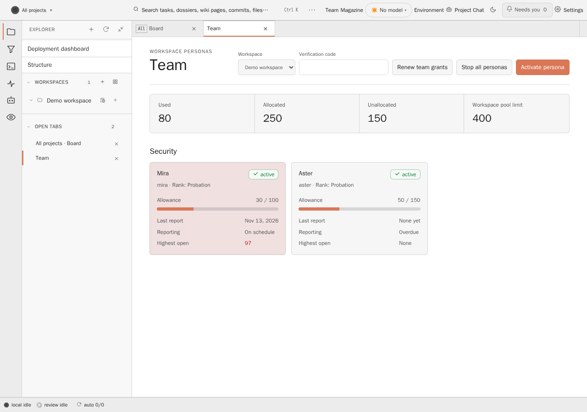
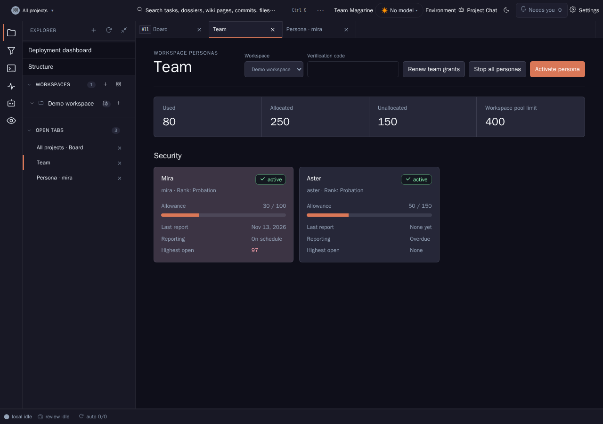
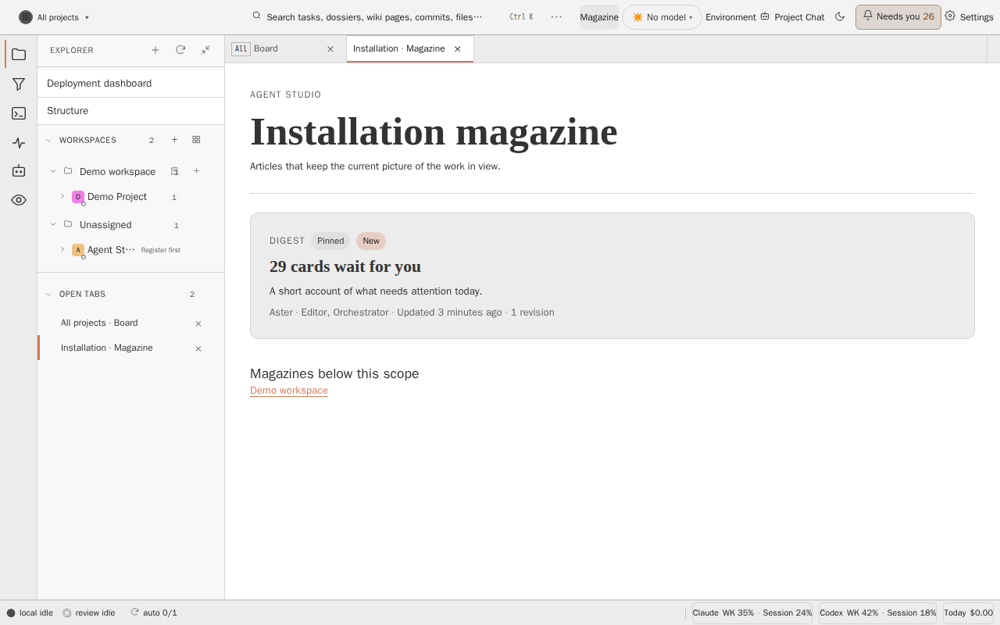
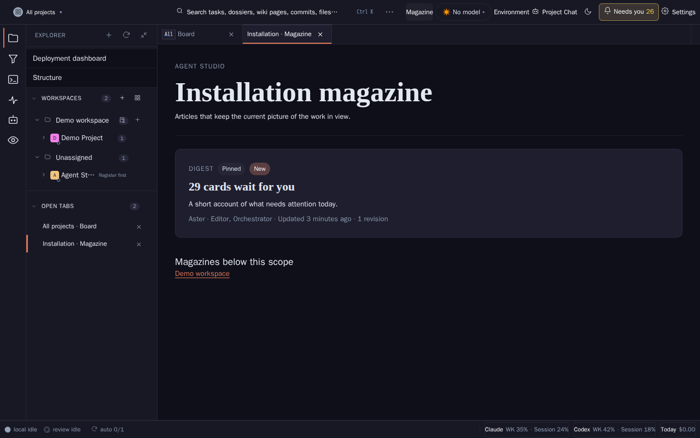
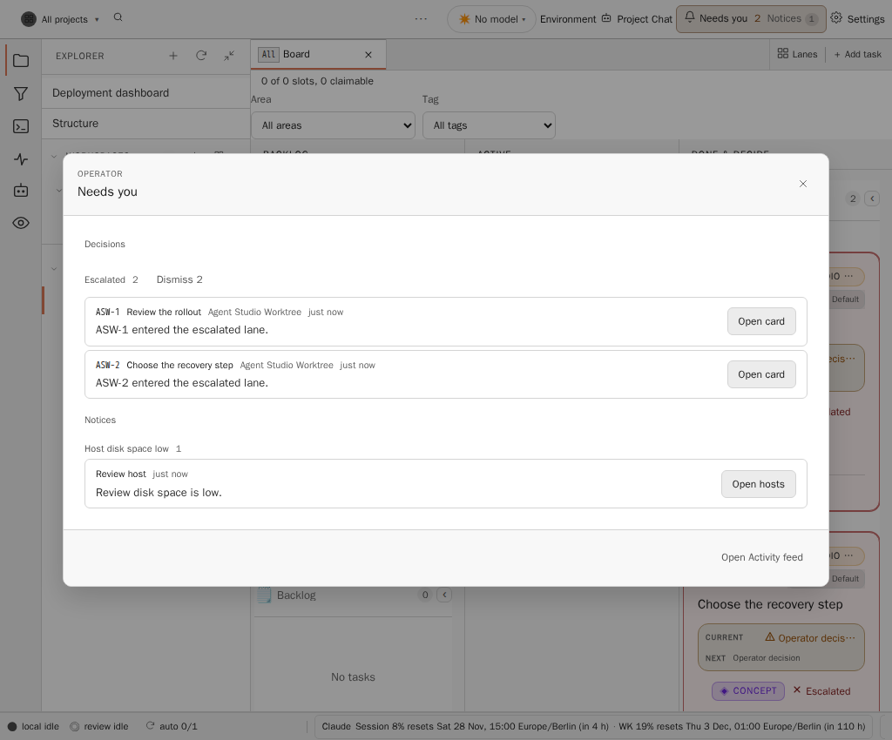
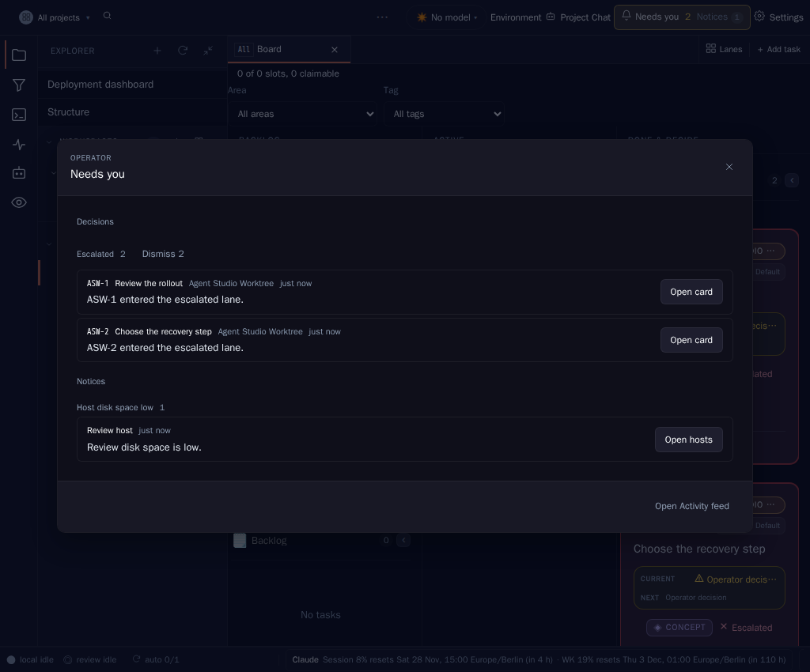

Next sweep 12:00 CET · CLI compatibility
Global personas
Give a small installation team standing duties, a direct line from the Owner, and goals measured against Studio records. Start with the model watch and prove that a dated provider change can reach a verified routing outcome.
Entscheidungsvorlage
Das Team erhält vier Rollen für die gesamte Installation. Die Kostenkontrolle übernimmt Modelle und Verbrauch. Die Betriebsaufsicht beobachtet Hosts, Sicherheit und Backups. Die Qualitätsleitung überwacht Integrationszweige, Tests und Schutzregeln. Der Stabschef hält die offenen Entscheidungen und das Magazin zusammen. Die vorhandene Operator-Persona bearbeitet weiterhin konkrete Betriebsfälle. Die Dispatcher bleiben für die Reihenfolge und Freigabe ihrer jeweiligen Projekte zuständig.
Der erste Schritt macht die Modellwache auf dieser Installation nutzbar. Sie prüft alle sechs Stunden, Anbieterpreise, Modellfreigaben, CLI-Versionen und die tatsächlich geerbten Routen. Ein neuer Kandidat erhält einen Vergleich mit belegten Kosten, einem Qualitätstest und einem Test auf einem geeigneten Host. Eine freigegebene, rücknehmbare Standardroute kann die Persona innerhalb der erteilten Grenzen selbst umstellen. Für die Umstellung bleiben laufende Versuche und ausdrückliche Modellbindungen maßgeblich. Bei fehlenden Belegen oder einer Änderung außerhalb des Mandats erscheint eine konkrete Empfehlung mit Frist in der bestehenden Entscheidungsansicht.
Ein Satz im Team-Bereich oder Chat genügt für einen Auftrag. Die Persona zeigt ihre Lesart, die Kostenobergrenze und das erwartete Ergebnis. Der Eigentümer bestätigt dies mit einem Klick. Für einen verständlichen Auftrag kann er die angebotene Fassung direkt mit dem Absenden bestätigen. Die Aktivierung und jede Ausweitung der Schreibrechte verlangen weiterhin einen frischen Bestätigungscode. Eine befristete Freigabe erspart Einzelbestätigungen für genau benannte Änderungen.
Auf der Persona stehen zuerst verfehlte Ziele mit Istwert, Sollwert, Zeitraum und Trend. Darunter folgen die offenen Pflichten, die letzten Entscheidungen mit Belegen sowie die Kosten pro Pflicht und Auftrag. Das tägliche Magazin meldet Abweichungen und getroffene Entscheidungen. Die Wochenausgabe zeigt, welche Abweichungen sich wiederholen, wer übernimmt und welche Wirkung gemessen wurde.
Empfehlung. Mit der Modellwache und GPT-6.2 Sol auf Stufe medium beginnen. Sie startet nach der Aktivierung im Beobachtungsmodus. Nach einer belegten Probeperiode und einer befristeten Freigabe übernimmt sie passende Änderungen selbst. Ohne Freigabe bleiben Vorschläge und Belege verfügbar. Die übrigen Rollen folgen erst mit ihren jeweiligen Datenquellen.
Recommendation
Assign duties to four existing catalogue roles at installation scope. Add a model-watch duty to the Cost controller. The installation instance of a role has its own identity, charter revision, budget and grant. Existing workspace or project instances keep their scope and may coexist. A report, finding, or proposed action has exactly one owning installation duty. Route related facts by source ID so a local persona can cite a finding without republishing it.
| Installation role | Standing ownership | Handoff |
|---|---|---|
| Cost controller | Model watch and spend efficiency | Owns policy comparisons and inherited installation defaults. The Budget steward retains its existing admission and budget remit. |
| Quality lead | Integration tips, test reliability and guards | Quotes existing review and verification receipts. Reliability engineer and line guardian retain their incident and delivery workflows. |
| Operations warden | Host posture, open security findings and backup assurance | Consumes Fleet operator pressure and recovery evidence, Security officer findings and Operations backup evidence. Fleet operator remains the already-planned incident responder. |
| Chief of staff | Decision age and coverage, daily and weekly issues | Consumes the decision desk scope and journal. Presenter or the existing issue renderer can present the same issue revision. |
The installation covers every registered active workspace and project, active runner and review hosts, configured providers, and attributable installation costs. Include disconnected hosts as stale rather than dropping them. Retain historical projects in historical periods. Each fact carries an installation ID, source ID, source revision, measured and observed timestamps, and workspace, project, host or provider identity where applicable. Installation access is an explicit Owner-granted read capability. Facts crossing workspace boundaries are minimized and redacted. Viewers see only authorized subtrees and totals calculated from their visible rows. See the Persona team Dossier, the Dispatcher Personas Dossier, and the Fleet operator Dossier.
Keep the specialist catalogue entries available at workspace or project scope. Dispatchers and the line guardian retain their existing authorities. The Operations warden consumes their facts through APIs; it has no dispatch lease. The installation roles use one registry and one Team area.
Duties
Use the installation time zone, Europe/Berlin for this rollout. Store UTC interval bounds and a stable period key. Late evidence can correct a receipt while preserving its original submission time. A period ends in covered, partial, blocked or missed. A covered period may still contain a missed goal. Each receipt lists source coverage, findings, actions with verified outcomes or open references, and spend. Quiet periods still leave a compact receipt. Group repeated observations under the same condition ID and reopen only on recurrence or a meaningful revision.
| Duty and cadence | Facts | Period complete and delegated action |
|---|---|---|
| Model watch Every six hours and on a verified change signal. Triage each confirmed change within 24 h. | Provider release and price records, provider model discovery, approved CLI release feed, host advertised CLI versions and capabilities, qualification matrix and historical price ledger. Read configured and effective consumer routes, project inheritance, pins, fallbacks, task-creation defaults and product-generated card rules. | Fresh source inventory and effective diff, stable candidate or drift issue, owner and deadline. Relevant changes receive a comparison, canary outcome and disposition. The granted operation may update eligible future installation routes and record verification or rollback. CLI upgrades, hard pins and candidates outside the grant get a recommendation. |
| Spend and efficiency Daily by 09:00, seven-day trend weekly. | Usage receipts joined to task, mode, run, round and step, model-selection events, remote-review observations, process/tool events where retained, and historical prices. | Show tokens and priced USD per delivered card by mode, uncovered cards and attempts, round counts by recorded cause, repeated wait-only calls and above-standard model share by actual route and reason. Open one deduplicated research card for a breach with evidence; route fixes follow model-watch authority. |
| Integration and tests After a tip or guard signal and at 09:00 daily. | Registered integration refs with tip SHAs, current verification and post-merge receipts, batch results, test retry and load context, review and guard events. | List each tested tip or currently unverified tip, red age, high-load failures contrasted with matched ordinary-load runs, and guard ID with affected change. Attach a reproduction or mark the load link unconfirmed. Draft one diagnostic research card per failure signature or one proposed fix with reviewer and exact failure evidence. The existing gate owns merges, exceptions and test disabling. |
| Hosts Every 15 min from facts, on state change, daily review by 09:00. | Host registry and heartbeats, disk and memory/swap telemetry, in-flight leases and progress receipts, advertised capability freshness and Fleet operator pressure records. | Cover every expected host and report headroom against that host's admission threshold, suspected stalls against lease and progress deadlines, and stale advertisements against their TTL. Correlate causes and hand off one incident with host, thresholds and age to the Fleet operator. Host restart, cleanup, capacity or routing around a host follows its own authority. |
| Security and backup Daily by 09:00, weekly drill-age review, critical fact on arrival. | Security finding state and severity, credential-expiry counts, backup job and off-host verification records, isolated restore drill results covering data and key recovery. | Report unresolved high/critical findings with owner and age, last successful verified copy and last successful drill or unknown. File a redacted finding and a restore-drill proposal when thresholds are missed. Rotation, access changes, production restore and host remediation require their named owners. |
| Decisions waiting Hourly reconciliation, daily issue at 09:30. | Decision desk pending occurrence IDs, opening and closing times, urgency, due time, supersession and journal receipts. Distinguish human decisions from informational notices using the desk projection. | List open count by severity, oldest age, due and overdue IDs, explicit action and recommended choice. Send one reminder per overdue occurrence and reuse its existing desk entry. The Chief of staff may record a disposition already authorized for its own duties. Personal approval stays with the person. |
Model qualification and roll-in
The first baseline records the effective routes after the Owner's manual changes and retains the 17–28 November incident as a replay. Check each configured provider on its official release and price source and reconcile with CLI discovery from eligible hosts. Persist published time, observed time, release or price reference, price unit and currency, cache/input/output dimensions, hosted subscription versus metered treatment, observed host capability, and canonical model ID. A same-price CLI release is still a finding if it changes model availability. An unreachable source carries a freshness failure. A provider label, advertised price or a newer version alone leaves the candidate in watch.
- Inventory. Build a before/after preview for new-card defaults, each path creating cards automatically, consumer and fallback rows, and effective project and step routes. Show inheritance, health-affected versus configured values, resolver constraints and explicit pins separately. Classify stale references against approved replacement, qualification or deprecation evidence. An older model can have a reasoned retained disposition with review date.
- Compare. Compare candidate and incumbent in the same capability class using paired replay of at least five representative cases for the affected consumer. Use identical case inputs and record effort, passing contract and guard results, measured tokens including cached input, priced cost, wall time, and provider refusals. Reuse recent paired evidence when the model, CLI, effort, route and suite revisions are identical. Spread fresh comparisons across budget periods or use a separately authorized benchmark allocation. Require all hard checks green, no regression on baseline-passing cases, current CLI/auth/readiness for every eligible target, and projected median priced cost at or below the incumbent for unattended adoption. Prefer quota-neutral placement and keep the current reserve and correctness floor. Incomplete or conflicting evidence becomes an explicit recommendation with the missing proof.
- Canary. For an eligible new model, use its qualified explicit-pin path on three controlled, non-production or designated canary research cards. Verify actual model, consumer and host receipts, no refusal, and the same checks and cost ceiling. Until a catalogue entry supports use as a default, including removal of an explicit-pin-only guard when proven, emit a coding proposal with that evidence through the normal pipeline. The model watch still runs if code adoption is pending.
- Apply and verify. Start with one named installation route family per change and one outstanding trial at a time. Use the normal settings service and retain a previous revision. Read back configured and effective routes immediately, including masked projects. Verify actual receipts for the first five eligible new attempts within 24 h and compare quality and cost. A refusal, mismatch, breached cost/quality floor, or missed verification deadline triggers the authorized restore when the applied revision still matches. Every trial records verified, reverted, retained or human decision required. The current manual 6.2 configuration can yield a verified no-op with evidence.
Slice GP-1 exercises a real prospective scheduled occurrence against current installation sources and a bounded write/readback with rollback on a designated canary route using the same production resolver and API. It also replays the 17 November release plus the 28 November stale-route comparison. If today's audit finds no eligible production change, close that occurrence with observed no-op evidence. Follow-up evidence for review fallbacks or hard pins goes to their named owners with the exact effective route and current constraints. Do not relabel a replay or a canary as an installation-wide upgrade.
For spend, use unique provider invocation IDs across exports. Count a repeated wait-only invocation when its task, operation and observed job/step match an earlier invocation on unchanged evidence and it yields only status or log reads, with no new evidence or work. Report the denominator of classifiable invocations alongside all observed calls and unknown classifications. Deduplicate rounds by attempt, assign one recorded primary cause such as review rework, integration conflict, infrastructure retry or Owner follow-up, and leave unresolved attribution as unknown. Attribute cost to actual model and effort. Report known USD at historical list price, unknown-price sessions separately, and usage or quota where reliable without treating list prices as invoices.
Assignments
“Compare the cost and quality of the new Codex model for our review fallback by Friday” works from Team or chat. Both use the same assignment command under the Owner's session. Resolve the persona, scope, deliverable, finish condition, earliest time, one-off or recurrence, next due date, cost cap and action class. Default to a one-off research report within the persona's existing budget and authority. Ask only for unresolved recurrence, risky scope or ambiguous deliverable. The confirmation preview carries a stable draft ID, a summary and an estimated cap. If the Owner chose the persona and can see that interpretation before sending, Send can confirm the exact draft. In chat, a subsequent explicit confirmation binds the displayed revision. Confirmations are idempotent across the two entry points.
The assignment is the Owner's mandate. It remains visible across occurrences with history, next due date and controls to edit future occurrences, pause, cancel, or run the next occurrence early. A card is the traceable execution unit with a project, a mode and the normal pipeline. One assignment can produce successive research cards and, under an allowed grant or recorded decision, a linked coding card in its owning project. Card completion alone leaves the mandate open until its result matches the assignment's finish condition and the receipt links the evidence. A one-off ends with evidence, cancellation, or a visible failure and reason. A recurring assignment closes per occurrence and continues until its end date, count limit or Owner stop. Editing a recurring assignment versions future work. Cancellation stops new admissions immediately, revokes unconsumed writes and requests cancellation through the existing pipeline for in-flight work. Final usage and evidence remain attached.
Execution and budgets
Due period or assignment
Typed facts, scope, revision
Typed facts, scope, revision
Admitted occurrence
Lease, budget, research or coding card
Lease, budget, research or coding card
Verified receipt
Goals, decision desk, Magazine
Goals, decision desk, Magazine
Extend the existing Watcher and persona occurrence path. Fixed intervals, DST-aware local daily/weekly cutoffs and typed urgent signals feed the same coordinator. Reserve a durable occurrence by installation, persona instance, duty or assignment revision, and period, plus a source condition key for early triggers. Restart reconciles existing cards and leases by that key. Quiet reads, typed threshold checks, missed coverage and period receipts can be produced without a model. Research cards handle comparison and evidence synthesis. A coding card is created only for a specific change that requires source, a named owning project and the existing integration policy. Use the configured Studio maintenance project for cross-installation research and the repository-owning project for a fix. Scope comes from the persona principal and approved fact projection, rather than the backing project's privileges. Server-authenticated authorship records persona, role, requester if assigned, occurrence and parent receipt. Workers receive a bounded facts pack and use standard task admission, least-privilege runner claims and existing review.
| Role | Trailing seven-day cap | Duty allocations within the cap |
|---|---|---|
| Cost controller | 180k metered tokens / USD 6 | Model 100k / USD 3.50, efficiency 50k / USD 1.50, assignments 30k / USD 1. |
| Quality lead | 100k / USD 4 | Integration and tests 75k / USD 3, assignments 25k / USD 1. |
| Operations warden | 100k / USD 4 | Hosts 40k / USD 1.50, security and backup 40k / USD 1.50, assignments 20k / USD 1. |
| Chief of staff | 80k / USD 3 | Decision watch 25k / USD 1, Magazine 35k / USD 1.25, assignments 20k / USD 0.75. |
These proposed ceilings cover a trailing seven days as evaluated at each admission. Installation totals are 460k tokens and USD 17 at the listed ceilings. Use gpt-6.2-sol with medium for new persona work, pinned through the current qualified path at rollout. Schedule by available quota. Reserve input, maximum output and worst-case priced cost across the installation, persona, duty and occurrence before any billable attempt, including rework and model-based review. Proposed ordinary occurrence cap is 25k tokens and USD 1, with a smaller cap where the duty balance requires it. Reconcile actual usage once by invocation ID. An unpriced route or usage gap leaves the accounting open and holds further metered work under that allocation until it can be safely reconciled. Unused allowances stay unspent.
Higher effort on Sol is justified for a bounded compatibility diagnosis or clearly specified complex failure after a failed standard run. An Astra comparison is justified when the decision explicitly depends on evaluating Astra or when a correctness floor with no qualified standard route requires it. Record the benchmark or failure, the exact ceiling and reviewer, and obtain a named allowance for above-standard use. On exhaustion, pause new model admissions for that duty, retain work in progress and settle usage, emit the fact-only receipt with next eligible time and any already observed failures, and surface the shortfall in Team and Magazine. Safety holds and already authorized restoration run through deterministic controls. Extra spend requires an Owner allowance. The next period starts with fresh facts and coalesces carry-over by condition.
Goals
A goal revision specifies its fact key and source, eligible scope and population, reducer, comparator, threshold and unit, measurement period and cutoff, minimum coverage or sample, owner and rule version. The service evaluates typed facts and stores a snapshot with numerator, denominator, missing IDs or count, observation time and evidence links. Use half-open periods, count each stable source ID once, and bind past snapshots to their original target. Calculate the trend against the preceding comparable period with the same scope and rule. An incomplete current period stays provisional. A known breach displays even when coverage is partial if the observed bound proves the breach. Otherwise missing or stale input gives unknown and zero eligible facts gives no observations. Use met, missed or in progress when justified. Show the actual measure and distance to target. Attendance and outcome are separate measures, and goals retain their own units.
| Goal and initial target | Computation and coverage |
|---|---|
| Model watch. At least 95% of confirmed relevant changes triaged within 24 h each local week. Zero unexplained superseded installation route rows at daily cutoff. | Count timely first dispositions divided by relevant confirmed changes assigned to the week of observation. Changes under 24 h old stay pending until their deadline. Keep provider publication-to-observation delay visible. Count unique resolved installation route rows without a live disposition. Coverage includes each configured provider and each route family. GP-1 adds the triage receipt while using existing catalogue, effective routing and host facts. |
| Spend. Repeated wait-only calls at most 5% per week, with at least 90% classification coverage. Weekly median tokens per delivered card by mode at or below its first complete four-week baseline. | Use usage and process correlation, per-card attempt groups, and the joined evidence in the duty. Count tokens across every observed round for delivered cards assigned by completion date. Compare medians with sample counts, require at least 10 covered cards per mode and at least 90% linkage. Until the baseline exists the token goal is collecting data. Above-standard use, USD per card and cause mix are supporting measurements. |
| Quality. No integration tip red for more than two hours each day. | Maximum uninterrupted red time per integration ref during the period, using time since the first red receipt and carrying age through midnight and across further red tips. Close the episode only on a covering green. Use exact-tip verification and tip-change history. Display unverified tip age separately and link the current refs. High-load-only recurrence and guards are supporting measurements when load and guard facts are available. |
| Hosts. At least 99% of expected host intervals with a heartbeat and fresh compatible capability advertisement each week. | Count healthy expected host intervals over all scheduled intervals from the host registry and advertisements. Include active disconnected hosts, exclude explicitly retired intervals from their retirement timestamp, and show disk and memory threshold breaches and stuck lease IDs beside the rate. |
| Security and backup. Zero unresolved critical findings past their SLA and last successful isolated restore drill at most 30 days old at the daily cutoff. | Read findings with severity, opening time and SLA deadline. Count open overdue IDs. Subtract last successful verified drill end from cutoff. Display no successful drill when a complete record proves absence and unknown when the evidence source is incomplete. A successful backup alone supplies no drill timestamp. |
| Decisions. Zero urgent human decisions older than 24 h at the daily cutoff. | Use current open, actionable, unsuperseded desk occurrences, deduplicated by decision ID. Display total pending and oldest age with urgent-overdue count. Reopening after a genuine state recurrence creates a new occurrence. Rewording keeps the original age. |
Persona page
The design keeps the Team navigation and includes an installation roster, one reporting period, visible goal thresholds and coverage, next work, actions and evidence. The first scan answers which goal needs attention. Each row states its own measurement window. Compare an open week with the preceding week at the same cutoff and label it week to date. Disclosing a goal or action shows the source-level breakdown and receipts. The page labels inactive, shadow, live and paused status with the currently authorized action families. The example uses illustrative values and a historical rehearsal to make the planned hierarchy concrete.
Cost controller
Installation · Shadow · Route changes require a grant
Maintains model routes and measures spend across the installation.
Assign workAuthority and audit
23–29 November 2026 Week to date · 28 Nov, 09:00 CET
Goals
Repeat wait-only callsWeek to date17% (17/100)Above target · ≤ 5%+7 pp
Unexplained stale routesDaily cut0 (12 checked)Met · 0 routes−3 routes
Changes triaged in 24 hWeek to date100% (4/4)Provisional · ≥ 95%+20 pp
Repeat-call evidence
100 of 108 observed calls could be classified. Prior comparable value 10%. A breakdown links source runs and the repeated log-read invocation IDs.
Open duties · 2
Model watch
Efficiency review
Repeat-call diagnosis · Due 29 Nov, 09:00 CET
Individual assignments · 1
Compare review fallback cost
One-off research · Due 30 Nov · USD 0.50 cap
Last actions
08:45 · Default route verified
Existing owner change · Route comparison
08:12 · Review fallback proposed
Human decision · Decision evidence
Cost · USD 1.74 / 6.00
Model watch USD 1.20 · Efficiency USD 0.54 · Assignments USD 0.00
USD 0.50 reserved · USD 3.76 remaining
34k tokens spent · 10k reserved · 136k remaining
The implemented page uses the Team detail surface, shared UI tokens, flat status treatments, permission-aware deep links and the standard loading, empty and failure states. A mobile view stacks the same rows. Display budget as spent, reserved and remaining for both tokens and priced USD, with unknown amounts separately; scope both the summary and its visible rows identically. Provide the receipt timeline with actor, kind, timestamp and result, and a link to the exact settings revision, card result or decision. Open duties and assignments show next due, current state and the reason for a hold. Hide write controls for viewers and offer pause or revoke to authorized Owners.
Magazine
The Chief of staff publishes an installation daily issue at 09:30 and the previous local week's issue on Monday at 11:00. Both open with missed or unmeasurable goals and decisions taken, grouped by current severity and impact. The daily issue links target, actual, coverage and first detection for each miss, then shows applied, retained, or reverted actions and their verified effect. It ends with unresolved human choices with a recommended option and due time, duty gaps, and cost. Use the same decision IDs and link to the desk. Only a new or materially changed condition gets a new decision entry.
The weekly issue compares consistent periods and names repeated misses, effectiveness of route changes, cost and coverage by role and duty, and next commitments. Order by acute misses, confirmed effects and open choices. Use the existing Magazine installation scope with immutable issue input snapshots and versioned article references. Use a stable key for edition and period, and a retry-safe publication. Late facts append a dated correction with links to the original, receipt and revised measurement. A deterministic issue posts even when the editor uses no tokens, recording missing duties explicitly.
Alternatives
| Operating shape | Consequence |
|---|---|
| One installation supervisor for every watch | One budget and inbox, with every decision family and evidence source concentrated in a single identity. |
| Four existing roles with installation instances | Named responsibility for each duty, narrow grants and distinct costs. Shared scheduling and source references keep the fixed operating cost low. Recommended. |
| Promote each specialist or compose project reports only | Broad coverage with more overlapping reports and budgets, or lower autonomy with installation infrastructure and provider facts still requiring an owner. |
For route adoption, manual recommendations are available during shadow. A narrow live grant makes eligible changes self-service with a verified rollback. A general settings grant would cover unrelated controls and weaken the evidence boundary. For individual work, creating a card immediately gives an execution artifact, while an assignment record keeps an enduring mandate and connects successive cards to it.
Evidence
ObservedAGT-3958, routing policyDocumented release on 17 November 2026, explicit-pin-only admission and Codex CLI 0.166.0 discovery. Qualification placed both models in the catalogue without promoting inherited routes.
ObservedPersona activation contractWorkspace-scoped activation snapshots, fresh single-use Owner step-up, and report-derived character sheet metrics.
ObservedPersona occurrence contractWatcher admission through the weekly ledger, fenced runner lease, bounded grounds pack and fact-only refusal report.
ObservedMagazine storeInstallation scope exists alongside workspace and project scopes. Article revisions can be cited immutably.
Owner incident account, 28 November. Eleven days after release, the Owner found gpt-6-sol still selected for new cards and review fallbacks, gpt-5.5 in product-created cards and fleet use of gpt-6.1-sol and, on hard cards, gpt-6.2-astra. The Owner described Astra as four times the token price in this comparison and reported that the operator changed settings by hand. The same account reports that 17% of model calls in the night repeatedly read build logs. Its invocation denominator and exact window were unavailable here. The planned duty measures the denominator and distinguishes repeats from new evidence.
Operator handoff, 27–28 November. The log at /home/agent/operator-evidence/operator-log-2026-11-26-27.md records the temporary research-card workaround at 22:51 and 00:35, the published Chief of staff digest at 03:21, and the queue promotion of the operator persona and decision desk cuts at 08:45. AGT-4260 through AGT-4269 published the nine reports and digest while no persona was activated, as recorded for this period. The distinct AGT-4263 weekly cost report quantified USD 109.05 repeat-review spend, 6.92% of USD 1,576.11 measured at list-price equivalent. AGT-4351 covers repeated review attributable to delivery changes, and AGT-4352 covers scoped usage writes contaminating a workspace total. The proposed spend duty makes both existing facts visible with their own coverage and attribution.
Evidence limits. The report artifacts and policy support the need for installation ownership and a measured trial. They give no prospective benchmark for default route adoption. The first occurrence freezes a fresh inventory and records the qualifying result or remaining evidence gap.
Light

Dark

Light

Dark

Light

Dark

Open decisions
Promoted slices use the recommendation when the recorded Owner decision does not select a different option. Activation and live grants retain their own step-up.
- GP-D1 · Besetzung
- Eine zentrale Persona
- Vier vorhandene Rollen mit Installationsmandat
- Alle Spezialisten global einsetzen
Empfehlung B. Vier klare Zuständigkeiten. Standard ist zunächst nur die Kostenkontrolle mit Modellwache. Die übrigen Rollen werden nach Lieferung ihrer Aufgaben angeboten.
- GP-D2 · Modellfreigabe
- Jede Änderung einzeln bestätigen
- Befristete Freigabe einer benannten Route mit Vergleich, Probe und Rücknahme
- Alle Routen freigeben
Empfehlung B. Die Modellwache sammelt sofort nach Aktivierung Belege. Nach sieben belegten Tagen kann der Eigentümer das begrenzte Mandat einmal freigeben. Ohne wirksames Mandat bleibt der begründete Vorschlag der Standard.
- GP-D3 · Einzelaufträge
- Sofort eine Karte anlegen
- Auslegung und Kostenobergrenze einmal bestätigen, dann passende Karten ausführen
- Nur im Chat protokollieren
Empfehlung B. Ein eindeutiger Auftrag startet standardmäßig als einmalige Recherche. Wiederholungen brauchen einen Rhythmus und ein sichtbares Ende. Die Bestätigung verleiht keine zusätzlichen Rechte.
- GP-D4 · Zielmessung
- Eine Gesamtpunktzahl
- Messwert, Zielwert und Belegabdeckung pro Ziel
- Freitextbewertung
Empfehlung B. Die vorgeschlagenen Grenzwerte gelten als Startwerte. Unvollständige Daten erscheinen als offen oder unbekannt. Neue Zielwerte gelten ab der nächsten Periode.
- GP-D5 · Kostenrahmen
- Gemeinsamer Kostentopf
- Installations-, Rollen- und Pflichtgrenzen mit Sol auf
medium - Freie Modellwahl je Lauf
Empfehlung B. Die Modellwache beginnt mit 100.000 Tokens und 3,50 USD je sieben Tage innerhalb des Limits der Kostenkontrolle. Ohne Restbudget erscheinen die verfügbaren Fakten und der nächste Termin. Mehrausgaben erfordern eine eigene Freigabe.
- GP-D6 · Magazin und Entscheidungen
- Ein Bericht pro Rolle
- Eine Tages- und eine Wochenausgabe mit Beleglinks und bestehender Entscheidungsansicht
- Nur Meldungen bei Ausnahmezuständen
Empfehlung B. Verfehlte Ziele und getroffene Entscheidungen stehen oben. Tagesausgabe um 09:30, Wochenausgabe montags um 11:00. Bei fehlendem Redaktionsbudget erscheint die Ausgabe aus den belegten Fakten.
Implementation
- GP-1 · Model watch. The first installation duty goes from schedule through sources, comparison, route preview, bounded canary write and rollback to a Team receipt and installation article.
- GP-2 · Duties and measurement. Generalizes the occurrence and goal snapshot contracts tested in GP-1. Adds the spend and quality projections.
- GP-3 · Host, security and backup coverage. Adds read-side adapters over the operator and backup work.
- GP-4 · Owner assignments. Adds the one-sentence assignment flow and links occurrences and cards.
- GP-5 · Team detail. Brings the measured goals, receipts, grants, costs and open work into one view.
- GP-6 · Decision watch and issues. Links the desk journal and publishes the daily and weekly issue using the existing Magazine infrastructure.
The internal chain is explicit in workbench.json. GP-1 owns installation defaults and reads project/review route outcomes. The existing operator cut AGT-4288 to AGT-4303 owns fleet responses and its review-route experiment (AGT-4296). AGT-4293 owns shared intervention admission. Keep GP-1's new work in the model-watch adapter and existing settings owner paths. When any edit overlaps a queued shared change, link the authoritative card dependency through the Task API before pickup. Before GP-3 consumes operator and backup additions, link the required external read contracts, initially AGT-4289 and AGT-4324/4325 as applicable. Before GP-6 touches Magazine or the desk, link the required external producer cards, especially the desk read and journal (AGT-4304 and AGT-4310) and the Magazine issue/store slices of AGT-4312 to AGT-4323. Existing contracts supply explicit missing facts while a producer is pending. The Workbench fields enforce the internal sequence. The promotion coordinator adds and verifies external edges against the current card state.